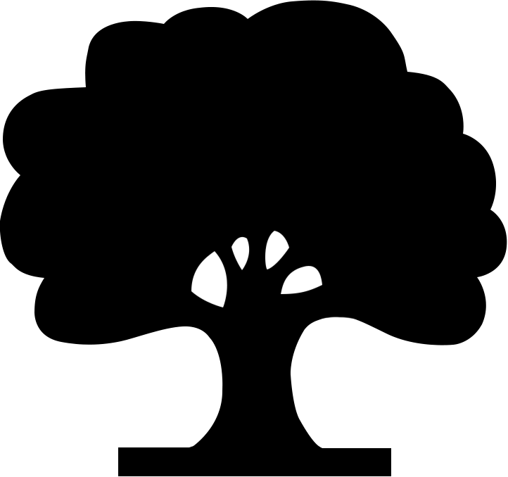
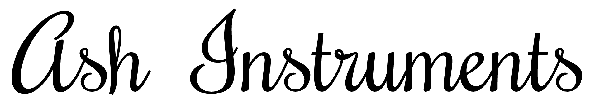

| Серийный номер | 150302 |
| Дата рождения | Март 2015 |
| Модель | Faberge |
| Мензура | 24.75" |
| Число ладов | 22 |
| Число струн | 6 |
| Радиус накладки | 12" |
| Материал корпуса | Сапеле |
| Материал топа | Каштан |
| Материал грифа | Сапеле |
| Крепление грифа | Вклеен |
| Материал накладки | Лунный эбен |
| Верхний порожек | Кость |
| Цвет фурнитуры | Золото |
| Колки | Gotoh 510 |
| Струнодержатель | Schaller |
| Звукосниматели | Gibson 490R/T |
| Электроника | Громкость/Тон/Баланс |
| Переключатели | Хамбакеры/Синглы |
| Отделка | Глянцевый лак |
Dear customer,
Thank you for purchasing musical instrument made by Ash Instruments. We are very glad to see you in the growing club of Ash guitars and basses owners.
Your new instrument is a product of craftmanship made from best wood and parts. We hope you will enjoy your time with it as well as it's sound and playability.
Kind regards,
Andrey Shevchenko
luthier
www.ash-instruments.com